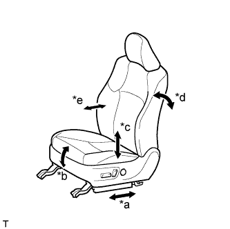

СИСТЕМА ПЕРЕДНИХ СИДЕНИЙ С ЭЛЕКТРОПРИВОДОМ (для моделей без запоминающего устройства) > ПРОВЕРКА РАБОТЫ СИСТЕМЫ |
| ПРОВЕРЬТЕ РАБОТУ ЭЛЕКТРОПРИВОДА ПЕРЕДНИХ СИДЕНИЙ |
|  |
Проверьте основные функции.
| *a | Функция продольного перемещения |
| *b | Функция вертикального перемещения передней части |
| *c | Функция подъема |
| *d | Функция наклона |
| *e | Функция регулировки положения опоры поясницы |
С помощью переключателей электропривода сидений проверьте работу всех функций сидений:
| ПРОВЕРЬТЕ ЭЛЕКТРОДВИГАТЕЛЬ ПРИВОДА СИДЕНЬЯ (ПРОДОЛЬНОГО ПЕРЕМЕЩЕНИЯ, ВЕРТИКАЛЬНОГО ПЕРЕМЕЩЕНИЯ ПЕРЕДНЕЙ ЧАСТИ, ПОДЪЕМА И НАКЛОНА) |
Проверьте работу термистора внутри электродвигателя привода сиденья.
Выберите функцию электропривода сиденья. С помощью переключателя электропривода сиденья переместите сиденье в одном из направлений до упора. Оставьте сиденье в этом положении примерно на 60 с.
Посредством переключателя электропривода сиденья попытайтесь переместить сиденье в том же направлении, что и на предыдущем шаге. Измерьте время, прошедшее до автоматического отключения тока (по звуку остановки электродвигателя).
После отключения тока отпустите переключатель электропривода сиденья и подождите приблизительно 60 секунд.
С помощью этого же переключателя электропривода сиденья переместите сиденье в противоположном направлении. Убедитесь, что электродвигатель работает.
| ПРОВЕРЬТЕ ЭЛЕКТРОДВИГАТЕЛЬ ОПОРЫ ПОЯСНИЦЫ |
Проверьте работу термистора PTC внутри электродвигателя опоры поясницы.
С помощью переключателя электропривода сиденья переместите опору поясницы в крайнее переднее или крайнее заднее положение. Оставьте опору поясницы в этом положении примерно на 60 с.
Посредством переключателя электропривода сиденья попытайтесь переместить опору поясницы в том же направлении, что и на предыдущем шаге. Измерьте время, спустя которое происходит отключение тока (исчезает звук работы регулятора).
После отключения тока отпустите переключатель электропривода сиденья и подождите приблизительно 60 с.
С помощью переключателя электропривода сиденья переместите опору поясницы в противоположном направлении. Убедитесь, что электродвигатель работает.